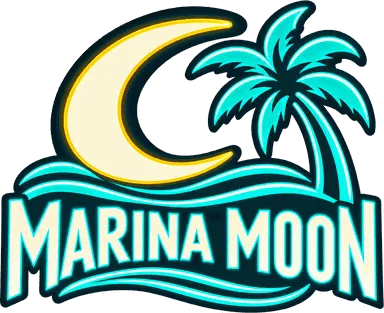
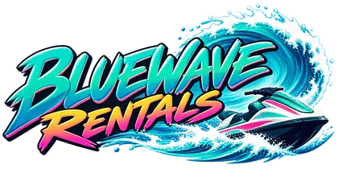

Marina Moon
« The sea is included; bottled water is ordered. »The owner's motto · Estelle et Martin Voss
- OwnerEstelle et Martin Voss
- Since1977
- Address136 Ocean Drive, Beach
Follow Ocean Drive from the pier to the terrace facing the little blue boat. - Opening hoursDaily 5pm–11pm; last grill order 10:15pm, view subject to mooring.
Its story
Estelle and Martin opened in 1977 with a grill and eight tables. She makes tropical rice; he counts the prawns before declaring the portions generous.
Since 1981, a captain has claimed the berth in front. In 1984, Estelle turned the blocked view into a table “closest to the boats”; the dinner for two eventually filled the room.
Anecdotes
- In July 1984, customer Ada Morn brought binoculars to see over the blue boat.
- In August 1985, Gabriel requested lemonade without noisy ice to record the masts.
- In May 1986, Dolores Van Pelt inaugurated the ninth table; Martin billed her water bottle separately.
The ad
Played completely straight, on TROPICANA 88.5 FM.
(voix chaleureuse)Listen to TROPICANA 88.5 FM →
Quand le soleil descend sur Vice Bay, Marina Moon allume ses enseignes sur le front de mer.
Poissons grillés, crevettes, riz tropical et limonade glacée.
La terrasse donne directement sur les bateaux.
Enfin…
(pause)
quand aucun bateau n'est garé devant.
Le capitaine du petit bateau bleu affirme que sa place est réservée depuis 1981.
Personne n'a retrouvé le contrat.
Cette semaine, dîner pour deux : 29 dollars.
(pause)
La bouteille d'eau est en supplément.
Marina Moon.
La mer est toujours incluse dans l'addition.
---
# EMOTION 98.3
## EMOTION 98.3
Good to know
- The captain’s contract has a folder, still empty.
- Table 4 has two menus: with boat and with hope.
The neighbour

Bluewave RentalsBluewave Rentals shares the quay; Estelle keeps spare towels for its still-wet customers.